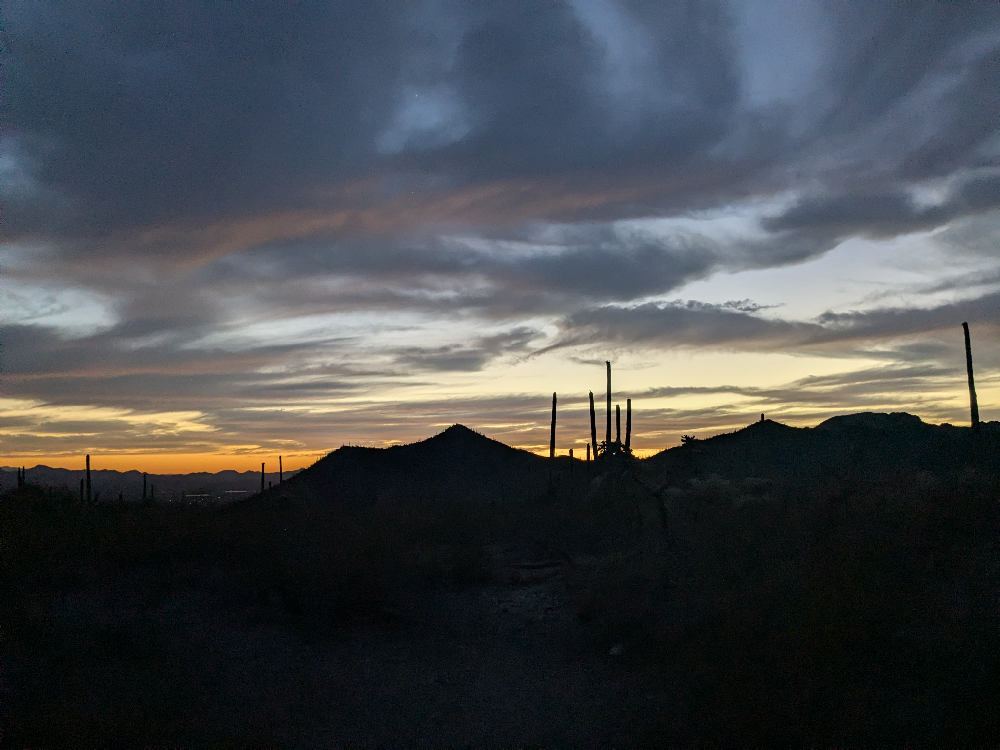
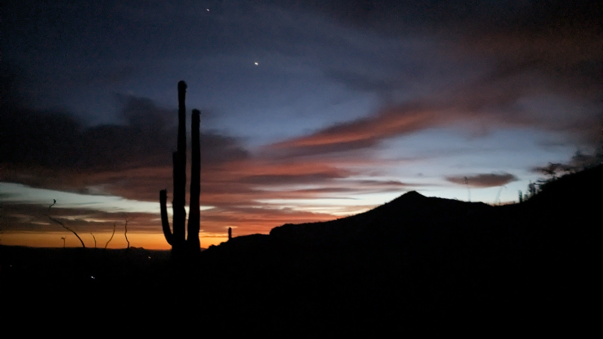
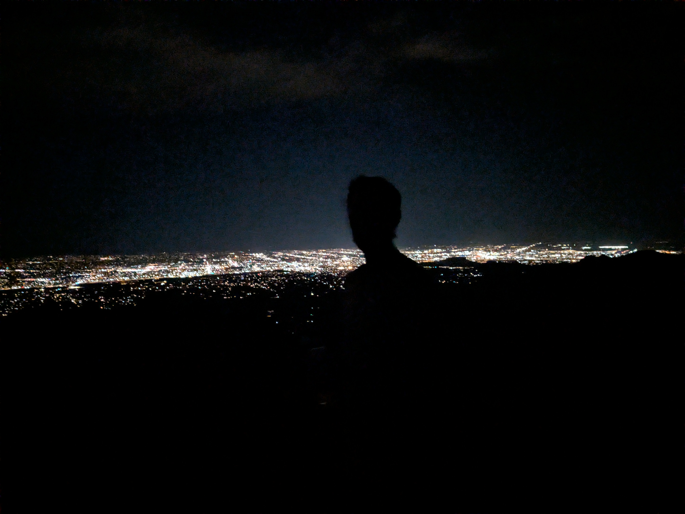
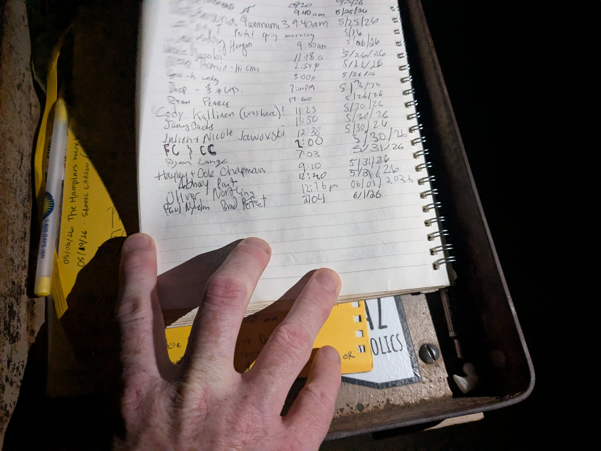

This was one of those silly trips where you fly to another state for a 2-hour meeting. But said meeting is early enough in the morning that you need to fly in the day before. I was traveling with my coworker Paul, who is the sort of guy who is always rail thin without regularly working out, but every 3 months or so will bust out a 10 mile run at a solid pace.
I wanted to keep up the momentum of using my work trips for peakbagging, but Tucson in June is not a good time to do it. I had spent the flight looking at peakbagging options, but most were going to be too far of a drive or too far for the time we had available. I ended up settling on Wasson Peak as a nearby option with some decent prominence and a very manageable 8 miles/2kft. The only problem is it was 110 degrees when we landed.
Paul and I hid in our hotel rooms throughout the afternoon, banging out work emails, eventually emerging for dinner at an extremely high rated, but questionable looking establishment. We ate way too much mediocre food and drank way too much soda out of 32 oz Styrofoam cups. It was like a fever dream version the nameless midwestern fast food experience of the 90’s. Now that we were feeling full and slightly hating ourselves, it was time to go for the full masochistic experience. “So, now that it’s cooled off a bit, are we doing that hike?”


We hemmed and hawed for slightly too long, and then needed to stop to pick up some waters, and arrived at the trailhead at dusk. Time to get started! We made decent time, our eyes gradually adjusting as the light faded into night. I had to quit jogging after stumbling heavily a few times, but the trail was steep enough that I didn’t want to go much faster anyway. The summit is accessed across a thin ridge and then a wraparound of the summit hump. Excellent views of the Tucson metro all around. We brought out cell phone cameras to aid in the descent, with Paul galloping off like a mountain goat and leaving me in the dust.


We made it back to the car for a 2 hour round trip. Between us, we picked 13 cactus spines out of our legs and arms. I also got to tick off Saguaro National Park off of my parks list.